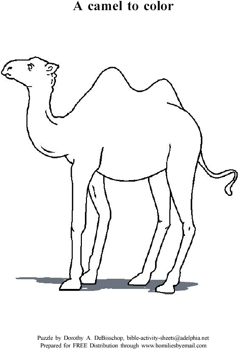

Read the lessons at the Vanderbilt Library website: http://divinity.lib.vanderbilt.edu/lectionary/BPentecost/bProper23.htm
Read
the lessons at the Vanderbilt Library website:
http://divinity.lib.vanderbilt.edu/lectionary/BPentecost/bProper23.htm
Elementary School Pew-work
Unscramble the bold words:
17As Jesus
was gnilkaw__________ down a road, a man ran up to him. He
knelt down, and asked, "Good teacher, what can I do to have
nreteal__________ life?"
18Jesus replied, "Why do you call me good? Only
God is good. 19You know the commandments. `Do not
rmrdeu__________. Be
fihtaflu__________ in
marriage. Do not lsaet__________.
Do not tell lies__________
about others. Do not ctaeh__________.
ctepsRe__________ your
father and mother.' "
20The man answered,
"Teacher, I have obydee__________
all these commandments since I was a young man."
21ssJue__________
looked closely at the man. He liked him and said, "There's one
thing you still need to do. Go lels__________
everything you own. Give the money to the rpoo__________,
and you will have riches in heaven. Then meco__________
with me."
1. What was Jesus doing when the man ran up to him? __________________________________________________________________
2. What did the man ask?_____________________________________________
3. What did Jesus reply to the man?____________________________________
4. What did Jesus tell the man to do?___________________________________
|
|
W N R S
V A
|
|
